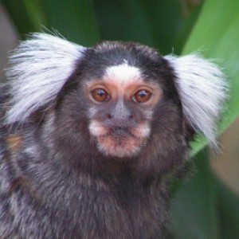
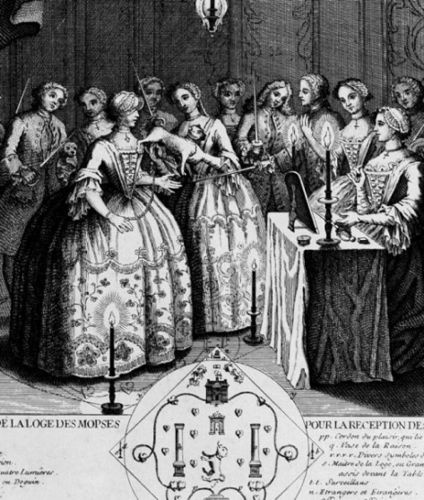
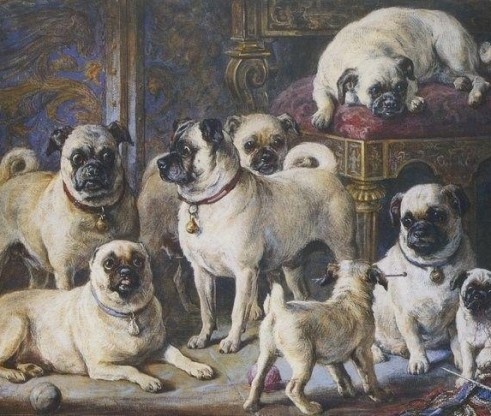

Although dating back to the 10th century in China, the Pug dog breed did not get its current Western name from these origins. Instead, consider the marmoset. In the early 18th century, marmosets were kept as pets in Europe and were called "pug monkeys". The story goes, the name made the jump to the dog because the two animals shared similar facial features. It is likely the word that describes both comes from the Latin pugnus, which means fist.
In 1572, during the Eighty Years’ War, there was an assassination attempt on the Dutch ruler William the Silent, the Prince of Orange. Before it could be carried out, Pompey, the Prince’s Pug, barked wildly and leapt onto his face, warning him of the danger. Ever since, the Pug has been considered the official dog of the House of Orange in Holland.
The Pug dog was used as the symbol of a Roman Catholic alternative to Freemasonry. The Pope had forbidden Catholics from joining the Freemasons, so the Order of the Pug was formed. The Pug was chosen for its loyalty and trustworthiness. There was a Grand Master, but each division of the Order of the Pug had two leaders called the “Big Pugs”.
Many years before the Corgi was considered the Royal dog breed, Queen Victoria was the top British dog fancier, and she loved pugs over all other dogs. Victoria was such a Pug lover that she also banned the practice of ear-cropping, encouraging Pug owners to enjoy their pups’ velvety ears in all their glory.
